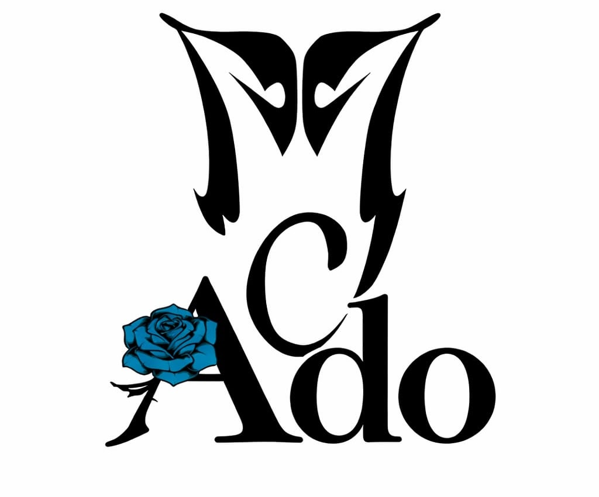
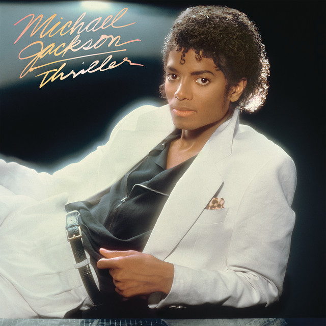
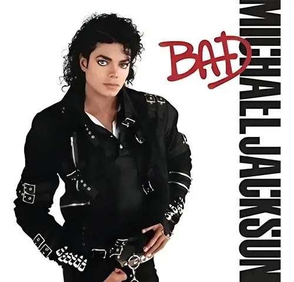
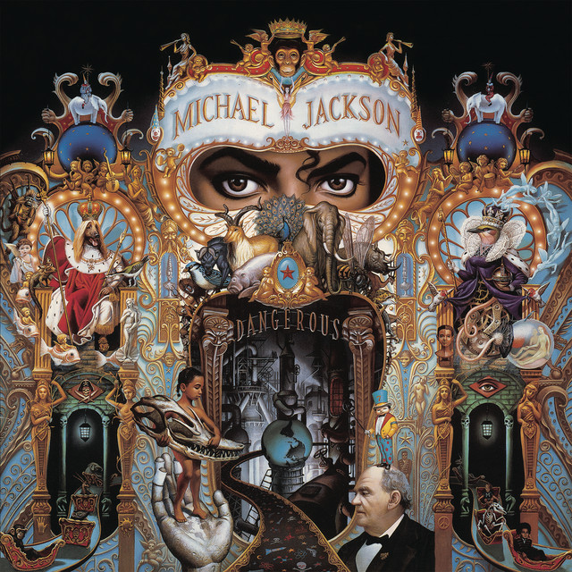
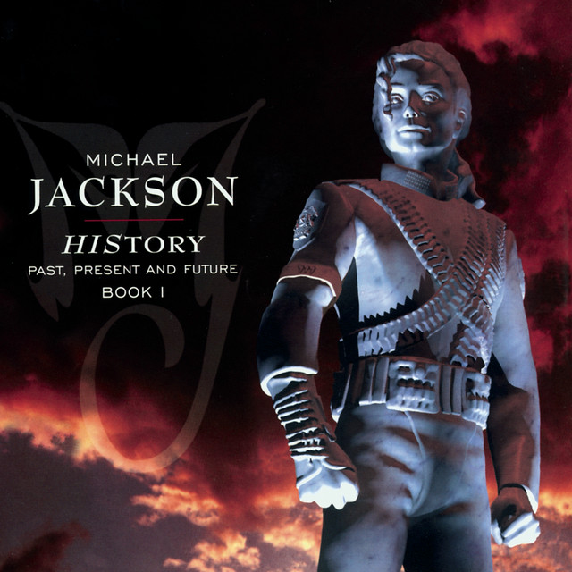
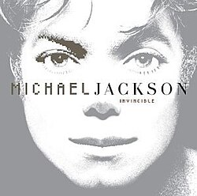
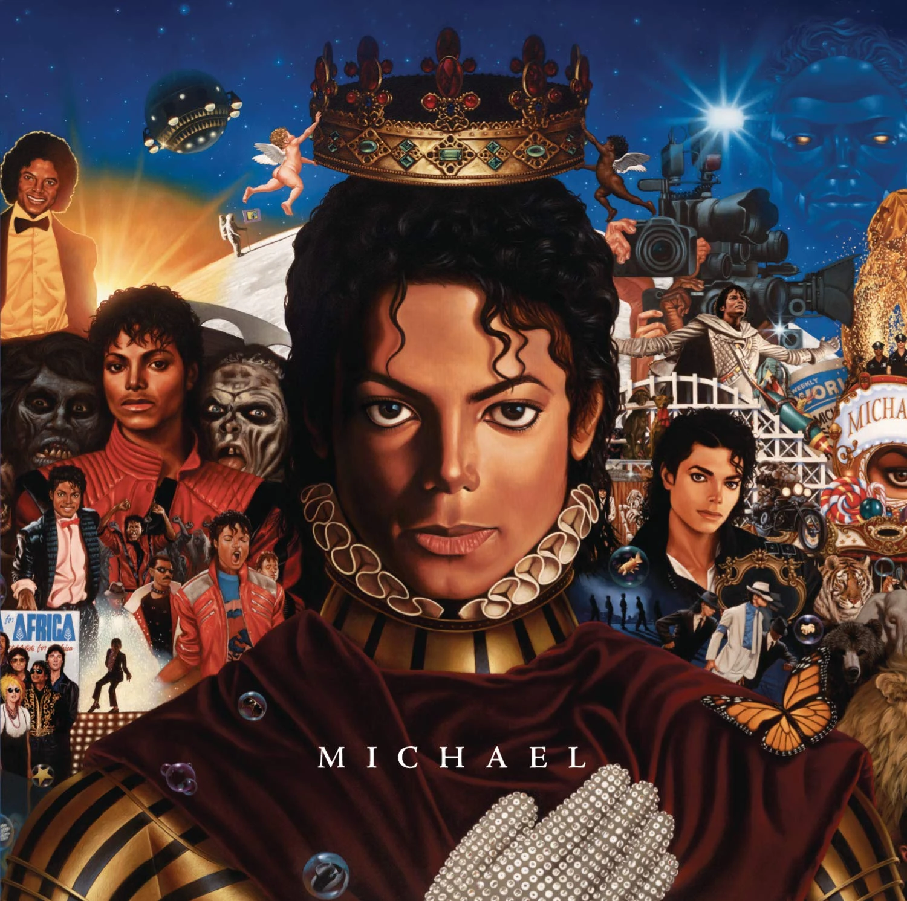
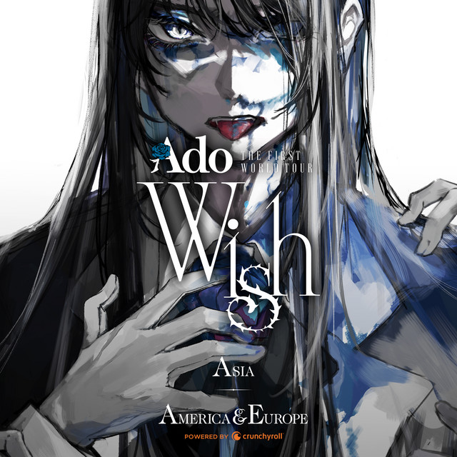
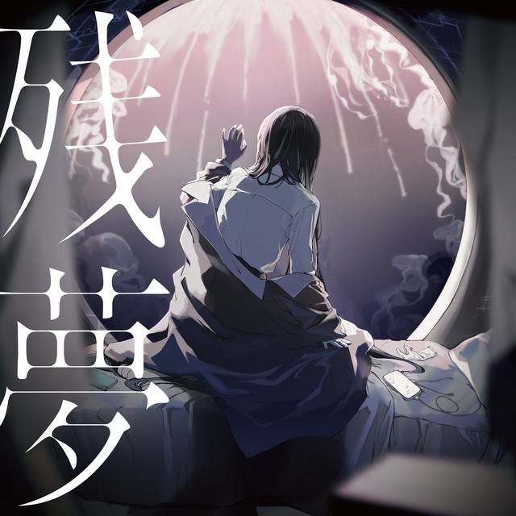

¡Bienvenidos a nuestro club de fans de Michael Jackson y Ado!
Nos alegra darte la bienvenida a un espacio donde habrá información de música, el talento y la pasión unen a estos Artistas. Este club está dedicado a mostrar el legado eterno de Michael Jackson, el Rey del Pop, y el extraordinario talento de Ado, una de las voces más impactantes e innovadoras de la música japonesa actual.
Nuestro objetivo es mostrar a la gente información y curiosidades de estos Artistas de manera respetuosa, donde sin importar si eres fan desde hace años o si apenas estás descubriendo sus trabajos, siempre habrá un lugar para ti.
¡Esperamos que disfrutes cada momento, conozcas junto a nosotros la magia que Michael Jackson y Ado transmiten a través de su música!

Bienvenida a la comunidad Moonwalkers Adomins
Michael Jackson
Michael Jackson (1958-2009) fue un cantante, bailarín y empresario estadounidense considerado la máxima estrella del pop de los años ochenta y conocido como el “Rey del Pop”.
Aspectos más importantes
Inicios con The Jackson Five:
Comenzó su carrera a los 8 años en el grupo familiar The Jackson Five.
Destacó rápidamente como líder, vocalista y bailarín principal.
Su infancia estuvo marcada por los maltratos de su padre, lo que influyó en su personalidad.
Inicio de su carrera solista:
Lanzó sus primeros álbumes en solitario: Got to Be There (1971) y Ben (1972).
La canción Ben le dio su primer número uno en Estados Unidos.
Continuó grabando con sus hermanos mientras desarrollaba su carrera individual.
El salto a la fama mundial:
La colaboración con el productor Quincy Jones fue decisiva.
Con el álbum Off the Wall (1979) consiguió varios éxitos y vendió millones de copias.
El gran punto de inflexión fue Thriller (1982):
Se convirtió en el disco de un solista más vendido de la historia.
Incluyó éxitos como Billie Jean, Beat It y Thriller.
El videoclip de Thriller revolucionó la industria musical por sus efectos especiales y coreografía.
Ganó 8 premios Grammy gracias a este álbum.
Consolidación como “Rey del Pop”:
En los años siguientes publicó discos muy exitosos. Realizó giras mundiales multitudinarias y mantuvo ventas de millones de discos.
Álbum
Año
Bad
1987
Dangerous
1991
HIStory
1995
Invincible
2001
Vida personal y controversias:
Fue conocido por sus excentricidades y por la creación del famoso rancho Neverland.
Se casó con Lisa Marie Presley y posteriormente con Debbie Rowe.
Enfrentó acusaciones de abuso sexual a menores en 1993 y 2003.
En el juicio de 2005 fue absuelto de todos los cargos.
Últimos años y muerte:
Sus últimos años estuvieron marcados por problemas económicos, de salud y de imagen pública.
En 2009 anunció la gira This Is It, que marcaría su regreso a los escenarios.
Murió inesperadamente en junio de 2009, pocas semanas antes del inicio de la gira, causando una gran conmoción mundial.
Idea principal
Michael Jackson fue una de las figuras más influyentes de la historia de la música. Su talento como cantante y bailarín, especialmente con el álbum Thriller, transformó la industria del entretenimiento y lo convirtió en un ícono global, aunque su vida también estuvo marcada por controversias y problemas personales.
Michael Jackson - El Rey del Pop
Ado
Ado es una cantante japonesa y utaite, nacida el 24 de octubre de 2002 en Tokio, Japón, considerada una de las artistas jóvenes más importantes y prometedoras del J-pop. Desde el inicio de su carrera ha llamado la atención por su potente voz y por mantener su identidad en el anonimato, ya que nunca muestra su rostro al público.
Su interés por la música comenzó en 2014, cuando descubrió la plataforma Niconico desde una consola Nintendo 3DS. Allí quedó fascinada por los intérpretes conocidos como utaite, quienes realizan versiones de canciones sin revelar su identidad. Inspirada por ellos, en 2017 publicó su primera versión de la canción Kimi no Taion, dando inicio a su carrera como cantante en internet.
El gran salto a la fama llegó en 2020, cuando, con solo 17 años, debutó con el sencillo Usseewa. La canción se convirtió en un éxito viral, alcanzando el primer lugar en importantes listas musicales de Japón como Billboard Japan Hot 100, Oricon y Spotify Viral 50 Japan. Además, su videoclip superó los 100 millones de reproducciones en YouTube en solo 148 días, convirtiéndola en una de las artistas solistas más jóvenes en lograr ese récord.
A pesar de su enorme éxito, Ado ha decidido mantener su rostro oculto, utilizando ilustraciones y avatares en sus presentaciones. Esta decisión está relacionada con su origen como utaite, su admiración por Hatsune Miku y otros Vocaloids, y su deseo de proteger su privacidad y que el público se concentre en su música.
El año 2022 fue uno de los más importantes de su carrera. Publicó su primer álbum de estudio, Kyougen, y participó como la voz del personaje Uta en la película One Piece Film: Red. El álbum de la película fue un enorme éxito, rompiendo récords en las listas japonesas de Spotify, Apple Music y Billboard, y convirtiendo a Ado en la primera artista japonesa en ocupar los cinco primeros puestos de una lista musical con canciones de un mismo álbum.
En 2023 continuó consolidando su carrera con nuevos sencillos como Show y Kura Kura, este último utilizado como tema principal del anime Spy × Family. Ese mismo año lanzó Ado's Utattemita Album, un álbum de versiones de canciones de Vocaloid y J-pop elegidas por sus seguidores, y anunció su primera gira mundial, demostrando el crecimiento de su popularidad fuera de Japón.
En 2024 presentó su segundo álbum de estudio, Zanmu, publicado junto con un álbum en vivo grabado durante su primera gira mundial Wish, realizada en Estados Unidos.
Conclusión
Ado se ha convertido en una de las artistas más destacadas de la música japonesa actual gracias a su extraordinaria capacidad vocal, su estilo único y la decisión de mantener su identidad en secreto. Su trayectoria, desde publicar versiones en internet hasta realizar giras mundiales y romper récords en las listas musicales, demuestra que el talento y la originalidad pueden conquistar al público internacional sin necesidad de mostrar el rostro.
Ado - Artista Utaite y estrella del J-Pop
Discografía y Álbumes
Álbumes de Michael Jackson
(1979) marcó el verdadero inicio de la carrera de Michael Jackson como artista solista. Después del éxito de The Jacksons con Destiny, Michael decidió dejar atrás su etapa en Motown y crear un álbum que reflejara su crecimiento personal y musical. Durante el rodaje de The Wiz conoció al productor Quincy Jones, quien fue clave en la creación del disco
Off The Wall
lanzado el 29 de noviembre de 1982, es el sexto álbum de estudio de Michael Jackson y fue producido por Quincy Jones. El álbum marcó un antes y un después en la historia de la música al combinar géneros como pop, R&B, rock y post-disco, con canciones que abordaban temas como el romance, la paranoia y la conciencia social

Thriller
lanzado el 31 de agosto de 1987, es el séptimo álbum de estudio de Michael Jackson y la última colaboración con el productor Quincy Jones. En este disco, Michael participó como coproductor y escribió la mayoría de las canciones, explorando géneros como pop, rock, funk, R&B y soul, con temas relacionados con el romance, la discriminación, la superación personal, la paz y la presión de los medios de comunicación.

Bad
Dangerous es el octavo álbum de estudio del cantante estadounidense Michael Jackson. Publicado por Epic Records el 26 de noviembre de 1991, marcó su primer lanzamiento en más de cuatro años, tras Bad (1987). Producido en colaboración con Bill Bottrell, Teddy Riley y Bruce Swedien, fue el primer disco de Jackson desde Forever, Michael (1975) que no contó con su colaborador habitual, Quincy Jones. Incluye apariciones de artistas invitados como Heavy D, la princesa Estefanía de Mónaco, Slash y Wreckx-n-Effect. El álbum incorpora el new jack swing —género dominante en la época—, R&B y pop, además de elementos de funk, hip hop, música industrial, electrónica, góspel, clásica y rock. Jackson compuso o coescribió 12 de las 14 canciones, en las que aborda temas como el racismo, la pobreza, el romance, la superación personal, el multiculturalismo y el bienestar de la infancia y del planeta.

Dangerous
HIStory: Past, Present and Future, Book I a menudo denominado simplemente como HIStory, es un álbum doble por el cantante y compositor estadounidense Michael Jackson, lanzado el 20 de junio de 1995. Consta de el álbum de grandes éxitos Comienza la historia y el noveno de Jackson álbum de estudio, La historia continúa. Fue el quinto álbum de Jackson lanzado hasta Registros épicos y el primero de su sello, MJJ Productions. HIStory incluye apariciones de Janet Jackson, Shaquille O'Neal, Cortar, și el famoso BIG. Sus géneros abarcan pop, R&B, și hip hop con elementos de roca dura y funk rock. Los temas líricos incluyen conciencia ambiental, aislamiento, avaricia, și injusticia. Varias canciones pertenecen al acusaciones de abuso sexual infantil hechas contra Jackson en 1993 y el maltrato percibido por Jackson por parte de los medios. HIStory debutó en el número 1 del Cartelera 200 y en otros diecinueve países.

Past, Present and Future
Blood On The Dance Floor: HIStory in the Mix es un álbum de remezclas del cantante estadounidense Michael Jackson. Fue lanzado el 20 de mayo de 1997 por Epic Records. Contuvo ocho canciones que fueron remixadas de su anterior álbum, HIStory: Past, Present and Future, Book I, y cinco nuevos temas.[1] También considerado por muchos como álbum de estudio por contener 5 canciones nuevas, aunque dadas las diversas opiniones se le adjudican ambos términos.
Recibió opiniones diversas de los críticos de música contemporánea. Al respecto, fue criticado por tener letras superficiales. Tuvo dos sencillos y múltiples discos de platino, en varios países, al venderse más de 6 millones de copias en todo mundo, convirtiéndose así en el álbum de remezclas más vendido de la historia..
Blood On The Dance Floor
Invincible es el décimo álbum de estudio del cantante estadounidense Michael Jackson, lanzado el 30 de octubre de 2001 por Epic Records. Fue el último álbum de estudio de Jackson publicado en vida antes de su fallecimiento el 25 de junio de 2009. La creación de Invincible fue costosa y laboriosa, con el trabajo de diez productores discográficos y más de cien músicos. Jackson comenzó la producción multigénero en 1997 y no la terminó hasta ocho semanas antes del lanzamiento del álbum. Con gastos reportados cercanos a los 30 millones de dólares, sigue siendo el álbum más caro jamás realizado. El álbum cuenta con colaboraciones de Carlos Santana, The Notorious B.I.G., Fats y Slash. Incorpora R&B, pop y soul, y al igual que el material anterior de Jackson, Invincible explora temas como el amor, el romance, el aislamiento, la crítica mediática y los problemas sociales.

Invincible
MICHAEL es el undécimo álbum de estudio y el primer álbum póstumo del cantante estadounidense Michael Jackson. Fue lanzado el 14 de diciembre de 2010 por Epic Records. Michael fue el primer lanzamiento de todo su nuevo material discográfico en nueve años, desde Invincible en 2001. La producción estuvo a cargo de Theron "Neff-U" Feemster, John McClain, Giorgio Tuinfort, Teddy Riley, Brad Buxer, entre otros, y cuenta con Akon y Lenny Kravitz como artistas invitados. Michael es el séptimo álbum de Jackson lanzado por Sony y Motown/Universal desde su muerte en junio de 2009.

MICHAEL
Álbumes de Ado
Kyōgen Este es el primer álbum de estudio por la cantante japonesa, así como también su primer lanzamiento en CD. El álbum consiste de 14 canciones, incluidos 7 sencillos lanzados anteriormente durante el año 2020 y 2021, entre ellos, su sencillo debut exitoso Usseewa, que se posicionó en el primer puesto del Billboard Japan Hot 100. Después del anuncio del álbum, el último sencillo y décima canción del álbum, fue conocido como «???», hasta poco antes de su lanzamiento en que se reveló su nombre final, «Kokoro to iu na no Fukakai», escrita y compuesta por el cantante y compositor japonés Mafumafu. El 18 de enero Ado subió a YouTube el tráiler del álbum, revelando un trozo de cada canción, en el mismo orden de canciones del álbum y presentando el ícono de cada uno de los compositores acreditados en cada canción.
Kyōgen
Uta's Songs: One Piece Film Red Este es el primer álbum de estudio por la cantante japonesa, así como también su primer lanzamiento en CD. El álbum consiste de 14 canciones, incluidos 7 sencillos lanzados anteriormente durante el año 2020 y 2021, entre ellos, su sencillo debut exitoso Usseewa, que se posicionó en el primer puesto del Billboard Japan Hot 100. Después del anuncio del álbum, el último sencillo y décima canción del álbum, fue conocido como «???», hasta poco antes de su lanzamiento en que se reveló su nombre final, «Kokoro to iu na no Fukakai», escrita y compuesta por el cantante y compositor japonés Mafumafu. El 18 de enero Ado subió a YouTube el tráiler del álbum, revelando un trozo de cada canción, en el mismo orden de canciones del álbum y presentando el ícono de cada uno de los compositores acreditados en cada canción.
Uta's Songs: One Piece Film Red
Ado's Utattemita Album tattemita es un álbum de Ado que reúne canciones interpretadas por ella en sus primeros años como utaite (cantante de covers en internet). El álbum muestra su potente y versátil voz a través de diferentes estilos, incluyendo canciones que originalmente fueron creadas por otros artistas.
En general, Utattemita representa los comienzos de Ado y la evolución de su estilo vocal antes de convertirse en una de las cantantes japonesas más reconocidas.
Ado's Utattemita Album
Ado "Ready For My Show Playlist" Ado "Ready For My Show Playlist" es una playlist que reúne varias de las canciones más representativas de Ado, mostrando la energía, potencia y variedad de su estilo vocal. Incluye temas que reflejan diferentes etapas de su carrera y su capacidad para pasar de canciones intensas y rebeldes a interpretaciones más emocionales. En conjunto, funciona como una selección para conocer y disfrutar el estilo característico de Ado.

Ado "Ready For My Show Playlist"
Zanmu es el segundo álbum de estudio de Ado, lanzado en 2024. El álbum reúne canciones que muestran la evolución de Ado como artista, combinando sonidos intensos, pop, rock y momentos más emocionales. Incluye temas como “Show”, “RuLe”, “Missing” y “Value”, destacando por la fuerza y versatilidad de su voz. En conjunto, Zanmu refleja una etapa más madura y experimental de Ado.

Zanmu
Show LP es un lanzamiento de Ado centrado en la canción “Show”, uno de sus temas más enérgicos y llamativos. La canción destaca por su ritmo intenso, cambios vocales y una interpretación llena de fuerza, reflejando el estilo explosivo de Ado. Además, “Show” forma parte del álbum Zanmu (2024) y se convirtió en una de sus canciones más populares.
Show LP
Ado's Best Adobum es un álbum recopilatorio que reúne algunas de las canciones más destacadas y populares de Ado. Presenta temas de distintas etapas de su carrera, permitiendo apreciar la evolución de su voz y su estilo, desde canciones intensas y enérgicas hasta interpretaciones más emotivas. Es una buena recopilación para conocer los mayores éxitos de Ado en un solo álbum.
Ado's Best Adobum
Información Detallada de Álbumes
Off The Wall - Michael Jackson
El álbum, grabado entre 1978 y 1979, mezcló R&B, pop y sonidos disco, con canciones sobre la libertad, el romance y la superación personal. Off the Wall permitió a Michael abandonar su imagen de niño estrella y consolidarse como un artista adulto, sentando las bases para el éxito mundial que alcanzaría más tarde con Thriller.
Thriller - Michael Jackson
El disco incluye algunos de los mayores éxitos de Michael Jackson, como "Billie Jean", "Beat It", "Thriller", "Human Nature" y "Wanna Be Startin' Somethin'". Además, sus innovadores videoclips, especialmente el de "Thriller", revolucionaron la industria musical y transformaron el videoclip en una forma de arte.
Thriller fue un éxito mundial: permaneció 37 semanas en el primer lugar de Billboard, ganó 8 premios Grammy y se convirtió en el álbum más vendido de todos los tiempos, con aproximadamente 70 millones de copias vendidas. También ayudó a romper barreras raciales en la industria musical, consolidando a Michael Jackson como el "Rey del Pop" y una de las figuras más influyentes de la historia de la música.
Bad - Michael Jackson
El álbum fue un enorme éxito comercial, debutó en el número uno de Billboard y vendió más de 35 millones de copias en todo el mundo. Incluye grandes éxitos como "Bad", "The Way You Make Me Feel", "Man in the Mirror", "Dirty Diana" y "Smooth Criminal", logrando el récord de cinco sencillos consecutivos en el primer lugar del Billboard Hot 100.
La promoción del álbum incluyó la exitosa Bad World Tour, la primera gira mundial en solitario de Michael Jackson, y la película Moonwalker. Gracias a su innovación musical, sus videoclips y su enorme impacto cultural, Bad consolidó aún más a Michael Jackson como una de las mayores estrellas de la historia de la música.
Dangerous - Michael Jackson
Dangerous es el octavo álbum de estudio del cantante estadounidense Michael Jackson. Publicado por Epic Records el 26 de noviembre de 1991, marcó su primer lanzamiento en más de cuatro años, tras Bad (1987). Producido en colaboración con Bill Bottrell, Teddy Riley y Bruce Swedien, fue el primer disco de Jackson desde Forever, Michael (1975) que no contó con su colaborador habitual, Quincy Jones. Incluye apariciones de artistas invitados como Heavy D, la princesa Estefanía de Mónaco, Slash y Wreckx-n-Effect. El álbum incorpora el new jack swing —género dominante en la época—, R&B y pop, además de elementos de funk, hip hop, música industrial, electrónica, góspel, clásica y rock. Jackson compuso o coescribió 12 de las 14 canciones, en las que aborda temas como el racismo, la pobreza, el romance, la superación personal, el multiculturalismo y el bienestar de la infancia y del planeta.
Representó un cambio artístico en la carrera de Jackson al orientar su música hacia temas de conciencia social e incorporó una gama más amplia de sonidos y estilos. Combina ganchos pop pegadizos con coros memorables, al mismo tiempo que introduce sonidos underground a un público general. La crítica destaca su tono urbano y enérgico, con elementos como líneas de bajo sintético, scratching, percusión de caja de ritmos y sonidos no convencionales —bocinas de vehículos, cadenas deslizantes, rejillas que crujen, vidrios rompiéndose y metales que chocan—, además de técnicas vocales como beatboxing, scat y chasquidos de dedos. Del álbum se publicaron nueve sencillos entre noviembre de 1991 y diciembre de 1993, incluido «Give In to Me», lanzado exclusivamente fuera de América del Norte.
HIStory - Michael Jackson
HIStory: Past, Present and Future, Book I es un álbum doble del cantautor estadounidense Michael Jackson, lanzado el 20 de junio de 1995. Consiste en el álbum de grandes éxitos, HIStory Begins, además de su noveno álbum de estudio, HIStory Continues. El primer disco, HIStory Begins, contiene quince de sus sencillos de éxito lanzados originalmente a través de Epic Records, que abarcan desde 1979 hasta 1991. El segundo, HIStory Continues, comprende material nuevo, escrito y producido por Jackson y sus colaboradores. Fue el quinto álbum de Jackson lanzado a través de Epic Records y el primero bajo su propio sello, MJJ Productions. El álbum incluye apariciones de Janet Jackson, Shaquille O'Neal, Slash y The Notorious B.I.G. Sus géneros abarcan R&B, pop y hip hop, con elementos de hard rock y funk rock. Las temáticas incluyen la conciencia ambiental, el aislamiento, la codicia y la injusticia. Varias de las nuevas canciones del álbum se refieren a las acusaciones de abuso sexual infantil presentadas contra Jackson en 1993 y al maltrato por parte de los medios de comunicación..
HIStory debutó en el número uno de la lista Billboard 200 de Estados Unidos y en otros diecinueve países. Del álbum se lanzaron cinco sencillos. El primero fue un sencillo de doble cara A con «Scream» (un dueto entre Jackson y su hermana Janet) y «Childhood»; fue un éxito que alcanzó los cinco primeros puestos del Billboard Hot 100. «You Are Not Alone» se convirtió en la primera canción de la historia en debutar directamente en el número uno del Hot 100 y fue el último número uno de Jackson en Estados Unidos. Los sencillos posteriores incluyeron las canciones de protesta «Earth Song» y «They Don't Care About Us»; esta última generó acusaciones de antisemitismo. Jackson dijo que la letra de la canción había sido malinterpretada e incluyó una versión editada en ediciones posteriores del álbum.
Blood On The Dance Floor - Michael Jackson
Blood on the Dance Floor: HIStory in the Mix es un álbum de remezclas del cantante estadounidense Michael Jackson. Fue lanzado el 20 de mayo de 1997 por Epic Records. Contuvo ocho canciones que fueron remixadas de su anterior álbum, HIStory: Past, Present and Future, Book I, y cinco nuevos temas. También considerado por muchos como álbum de estudio por contener 5 canciones nuevas, aunque dadas las diversas opiniones se le adjudican ambos términos.
Recibió opiniones diversas de los críticos de música contemporánea. Al respecto, fue criticado por tener letras superficiales. Tuvo dos sencillos y múltiples discos de platino, en varios países, al venderse más de 6 millones de copias en todo mundo, convirtiéndose así en el álbum de remezclas más vendido de la historia.
Invincible - Michael Jackson
Invincible es el décimo álbum de estudio del cantante estadounidense Michael Jackson, lanzado el 30 de octubre de 2001 por Epic Records. Fue el último álbum de estudio de Jackson publicado en vida antes de su fallecimiento el 25 de junio de 2009. La creación de Invincible fue costosa y laboriosa, con el trabajo de diez productores discográficos y más de cien músicos. Jackson comenzó la producción multigénero en 1997 y no la terminó hasta ocho semanas antes del lanzamiento del álbum. Con gastos reportados cercanos a los 30 millones de dólares, sigue siendo el álbum más caro jamás realizado. El álbum cuenta con colaboraciones de Carlos Santana, The Notorious B.I.G., Fats y Slash. Incorpora R&B, pop y soul, y al igual que el material anterior de Jackson, Invincible explora temas como el amor, el romance, el aislamiento, la crítica mediática y los problemas sociales.
Invincible debutó en el número uno de la lista Billboard 200 de EE. UU. y también alcanzó el número uno en otros trece países del mundo. El sencillo principal, «You Rock My World», fue el último éxito de Jackson durante su carrera, alcanzando el número diez en el Billboard Hot 100 de EE. UU. y siendo nominado a Mejor Interpretación Vocal Pop Masculina en los Premios Grammy de 2002. «Cry» también se lanzó como sencillo, y «Speechless» y «Butterflies» se lanzaron como sencillos promocionales. El álbum recibió críticas mixtas y se convirtió en el álbum más criticado de Jackson. Las reseñas retrospectivas del álbum han sido más positivas, elogiando especialmente su musicalidad y producción. Se le atribuye la inclusión de ejemplos tempranos del dubstep.
En julio de 2002, tras la decisión de Sony de finalizar abruptamente la promoción de Invincible, Jackson alegó que el director ejecutivo de Sony Music, Tommy Mottola, era un «diablo» y un racista que utilizaba a sus artistas afroamericanos solo para beneficio personal. Jackson se negó a realizar una gira para promocionarlo, lo que agravó la creciente disputa entre él y Sony Music. A pesar de esto, fue certificado doble platino en EE. UU. Las ventas globales del álbum superaron los 8 millones de copias. En 2009, año de la muerte de Jackson, Invincible fue elegido por los lectores en línea de Billboard como el mejor álbum de la década del 2000.
Michael - Michael Jackson
Michael es el undécimo álbum de estudio y el primer álbum póstumo del cantante estadounidense Michael Jackson. Fue lanzado el 14 de diciembre de 2010 por Epic Records.[5] Michael fue el primer lanzamiento de todo su nuevo material discográfico en nueve años, desde Invincible en 2001. La producción estuvo a cargo de Theron "Neff-U" Feemster, John McClain, Giorgio Tuinfort, Teddy Riley, Brad Buxer, entre otros, y cuenta con Akon y Lenny Kravitz como artistas invitados. Michael es el séptimo álbum de Jackson lanzado por Sony y Motown/Universal desde su muerte en junio de 2009..
El álbum produjo cuatro sencillos: «Hold My Hand», lanzado el 15 de noviembre de 2010, que logró alcanzar la posición número 39 en la lista estadounidense Billboard Hot 100, «Hollywood Tonight», lanzado el 11 de febrero de 2011, «Behind the Mask» lanzado el 21 de febrero del mismo año y «(I Like) The Way You Love Me» publicado el 8 de julio del mismo año El video musical para «Hold My Hand» fue dirigido por Mark Pellington, y tuvo su debut internacional el 9 de diciembre de 2010.[8] El videoclip para «Hollywood Tonight» fue dirigido por Wayne Isham, quien además también dirigió el video para «You Are Not Alone» en 1995, en uno de los mismos lugares donde filmó este último: El Pantages Theatre, cerca del famoso Hollywood and Vine. El video se estrenó mundialmente el 10 de marzo de 2011. «(I Like) The Way You Love Me» fue lanzado en Corea del Sur como un sencillo digital el 18 de enero de 2011,y fue enviado a las estaciones de radio italianas y chinas en julio del mismo año..
Kyōgen - Ado
Kyōgen Este es el primer álbum de estudio por la cantante japonesa, así como también su primer lanzamiento en CD. El álbum consiste de 14 canciones, incluidos 7 sencillos lanzados anteriormente durante el año 2020 y 2021, entre ellos, su sencillo debut exitoso Usseewa, que se posicionó en el primer puesto del Billboard Japan Hot 100. Después del anuncio del álbum, el último sencillo y décima canción del álbum, fue conocido como «???», hasta poco antes de su lanzamiento en que se reveló su nombre final, «Kokoro to iu na no Fukakai», escrita y compuesta por el cantante y compositor japonés Mafumafu. El 18 de enero Ado subió a YouTube el tráiler del álbum, revelando un trozo de cada canción, en el mismo orden de canciones del álbum y presentando el ícono de cada uno de los compositores acreditados en cada canción.
Uta's Songs: One Piece Film Red - Ado
Uta's Songs: One Piece Film Red Este es el primer álbum de estudio por la cantante japonesa, así como también su primer lanzamiento en CD. El álbum consiste de 14 canciones, incluidos 7 sencillos lanzados anteriormente durante el año 2020 y 2021, entre ellos, su sencillo debut exitoso Usseewa, que se posicionó en el primer puesto del Billboard Japan Hot 100. Después del anuncio del álbum, el último sencillo y décima canción del álbum, fue conocido como «???», hasta poco antes de su lanzamiento en que se reveló su nombre final, «Kokoro to iu na no Fukakai», escrita y compuesta por el cantante y compositor japonés Mafumafu. El 18 de enero Ado subió a YouTube el tráiler del álbum, revelando un trozo de cada canción, en el mismo orden de canciones del álbum y presentando el ícono de cada uno de los compositores acreditados en cada canción..
Ado's Utattemita Album - Ado
Ado's Utattemita Album tattemita es un álbum de Ado que reúne canciones interpretadas por ella en sus primeros años como utaite (cantante de covers en internet). El álbum muestra su potente y versátil voz a través de diferentes estilos, incluyendo canciones que originalmente fueron creadas por otros artistas. En general, Utattemita representa los comienzos de Ado y la evolución de su estilo vocal antes de convertirse en una de las cantantes japonesas más reconocidas
Ado "Ready For My Show Playlist" - Ado
Ado "Ready For My Show Playlist" Ado "Ready For My Show Playlist" es una playlist que reúne varias de las canciones más representativas de Ado, mostrando la energía, potencia y variedad de su estilo vocal. Incluye temas que reflejan diferentes etapas de su carrera y su capacidad para pasar de canciones intensas y rebeldes a interpretaciones más emocionales. En conjunto, funciona como una selección para conocer y disfrutar el estilo característico de Ado.
Zanmu - Ado
Zanmu es el segundo álbum de estudio de Ado, lanzado en 2024. El álbum reúne canciones que muestran la evolución de Ado como artista, combinando sonidos intensos, pop, rock y momentos más emocionales. Incluye temas como “Show”, “RuLe”, “Missing” y “Value”, destacando por la fuerza y versatilidad de su voz. En conjunto, Zanmu refleja una etapa más madura y experimental de Ado.
Show LP - Ado
Show LP es un lanzamiento de Ado centrado en la canción “Show”, uno de sus temas más enérgicos y llamativos. La canción destaca por su ritmo intenso, cambios vocales y una interpretación llena de fuerza, reflejando el estilo explosivo de Ado. Además, “Show” forma parte del álbum Zanmu (2024) y se convirtió en una de sus canciones más populares.
Ado's Best Adobum - Ado
Ado's Best Adobum es un álbum recopilatorio que reúne algunas de las canciones más destacadas y populares de Ado. Presenta temas de distintas etapas de su carrera, permitiendo apreciar la evolución de su voz y su estilo, desde canciones intensas y enérgicas hasta interpretaciones más emotivas. Es una buena recopilación para conocer los mayores éxitos de Ado en un solo álbum.
¿Quiénes somos?
Somos un club de fans dedicado a reunir a los apasionados del legado musical de Ado y Michael Jackson. Nuestro objetivo es compartir contenido, novedades, curiosidades, eventos y crear un espacio de encuentro y respeto para toda la comunidad.